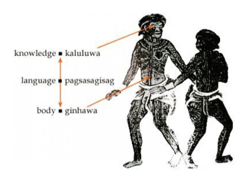
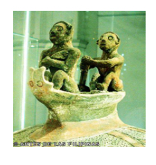

Ano ang kaluluwa?
Ang tao ay may dalawang bahagi ang panlabas at ang panloob. Sa panlabas ay ang katawan at sa panloob naman ay ang ginhawa o life force at ang kaluluwa. Ang ginhawa ay matatagpuan sa bituka at ang kaluluwa naman ay sa isip. Ang pagkakaroon ng hindi pagbuti ng ginhawa at ang pagsama ng kaluluwa ay naririnig gamit ang ating bibig o salita. Kaya pagmasama ang pakiramdam ay laging galit o kung pinanghihinaan ng pag-iisip ay laging negatibo o masama ang sinasabi.
Paniniwala sa kaluluwa
Naniniwala ang mga sinaunang Pilipino na ang kaluluwa ay lumalabas ng ating katawan kahit na tayo ay buhay pa at maari ring pasukin ng masamang espiritu. Maaring lumabas o pumasok ang espiritu sa ating bibig, mata, ilong at mga dulo ng daliri.
Gumagamit ang mga sinaunang Pilipino ng mga gintong Agimat upang proteksiyunan ito.
- Hikaw
- Sinturon
- Ginto sa ngipin
- Sash
- Singsing At iba pa
KASABIHAN
Kumain ka at huwag magpapagutom at baka lisanin ka ng iyong kaluluwa. Kumain ka at huwag magpapagutom(bituka o pinagmumulan ng ginhawa) at baka lisanin ka ng iyong kaluluwa. (Kaluluwa ay pag-iisip).
Ano ang ibig sabihin nito?
Kumain ka at huwag magpapagutom at baka lisanin ka ng iyong kaluluwa. Ibig sabihin na ang ginhawa ay may kinalaman sa pagkakaroon ng maayos na kaluluwa at hindi ka lisanin nito.
Ano ang kinalaman sa paniniwala sa kamatayan o langit?
Kung susuriin nating mabuti, ang ginhawa na nanggagaling sa bituka at kaluluwa na nasa isip ay bumubuo ng tuwid na linya. Kadalasan sinasabi natin itong tuwid ang kaluluwa. At ang tuwid na ito ay tumuturo sa kalangitan. Kapag hindi magkatugma ang kaluluwa at ginhawa madalas nating silang tawaging "Halang ang kaluluwa"o hindi tuwid kaya nakapagsasabi ng hindi mabuti sa kapwa. Kapag nilisan naman ng sariling kaluluwa at pinasok ng masamang kaluluwa halang pa rin ito sa pagkat hinaharangan ng kaluluwa na galing sa labas.
Ano ang kinalaman sa paniniwala sa kamatayan o langit?
Sa sinaunang paniniwalang Pilipino, mga tuwid lamang ang kaluluwa ang maaring makarating sa kalangitan o sa kanilang destinasyon.
ANO ANG MANGYAYARI SA KALULUWA KAPAG ANG KATAWAN AY NAMATAY? ITO AY MASASAGOT GAMIT ANG
Ang Manunggol Jar ay tinagurian din kayamanan ng bansa dahil ipinakikita nito na ang mga Pilipino ay naniniwala na sa kabilang buhay Bago pa man ito ibahagi ng mga Kastila.
Ngunit bakit bangka?
Dahil ang mga Pilipino ay orihinal na galing sa lahi ng Austronesian na kilala bilang mga mandaragat na ang tanging paraan lamang ng paglalakbay ay ang paggamit ng bangka.
Ano ang dahilan bakit nakabuo sila ng konsepto ng paglalakbay ng kaluluwa?
Noon pa man, kinakikitaan na ang mga Pilipino ng pagiging malapit sa kanilang pamilya. Noon, isa sa paraan ng pagkakaroon ng ginhawa ay ang paglalayag at pagbalik nang may dalang kagamitan mula sa ibang dako. Upang maibsan ang kanilang pagkalumbay, iniisip na lamang ng mga sinaunang Pilipino na sila ay naglalakbay upang magbigay ng ginhawa. Saan ka man naroon, gabayan mo kami. Ipinakikita nito ang pagbibigay ginhawa kahit ang tao ay namayapa na.
Ano ang anthromorphic Jar?

Noon pa man, kinakikitaan na ang mga Pilipino ng pagiging malapit sa kanilang pamilya. Noon, isa sa paraan ng pagkakaroon ng ginhawa ay ang paglalayag at pagbalik nang may dalang kagamitan mula sa ibang dako. Upang maibsan ang kanilang pagkalumbay, iniisip na lamang ng mga sinaunang Pilipino na sila ay naglalakbay upang magbigay ng ginhawa. Saan ka man naroon, gabayan mo kami. Ipinakikita nito ang pagbibigay ginhawa kahit ang tao ay namayapa na.
Oton Death Mask

Ang Oton Death Mask ay ginagamit noong sinaunang panahon upang hindi pasukin ng kaluluwa ang bangkay ng namayapa. Sinasamahan din ito ng mga kagamitan sa pang-araw-araw na pamumuhay at barya upang gamitin ng namayapa sa kabilang buhay. Bakit nilalagyan ng gintong maskara ang